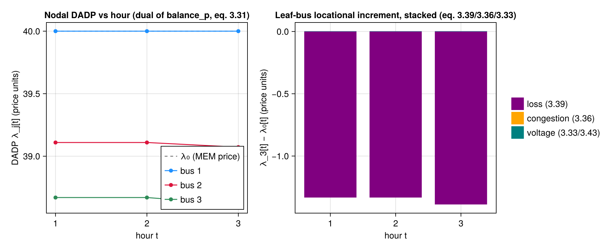

Rung 4 — DADP/DLMP Decomposition & Welfare Accounting
This page is the EXP-03 literate proof for the pricing seam (PRICE-01/PRICE-02/ PRICE-03): it executes the real extract_dlmp, decompose_dlmp, and welfare_accounting end-to-end during the Documenter build over a genuine solved ConvexBranchFlow point, so the numbers below cannot silently drift from the code (mirrors the toy_dc.jl reproducibility-proof pattern, threat T-01-09). Every component is reconstructed INDEPENDENTLY from a DISTINCT registered dual — never hand-rolled dual extraction — and both decompose_dlmp and welfare_accounting carry HARD internal assertions that throw on a dropped or mis-signed term (T-05-02/T-05-03), so reaching the displayed numbers below is itself part of the validation.
The DADP — dual of the nodal active balance
The day-ahead dynamic price (DADP), a.k.a. the DLMP, is the dual of the nodal ACTIVE-power balance constraint that solve_welfare closes at every bus and hour:
\[\lambda_j[t] \; = \; \text{dual}\big(\text{balance\_p}[j,t]\big) \qquad \text{(3.31)}\]
Positive λ_j[t] is the marginal cost of consuming one more unit at bus j, hour t. extract_dlmp REFUSES to return a price (throws) if handed an :l-bearing SOCP ctx that lacks the PF-04 exactness certificate ctx.meta[:socp_maxgap] — a strict (inexact) SOC relaxation makes l a fictitious over-current and any recovered dual physically meaningless (threat T-05-01).
The four-way decomposition
Because the feeder is a radial TREE, every bus j has a unique path root→j, and the per-branch price increment along that path telescopes into four INDEPENDENTLY-sourced components that provably SUM back to the nodal price:
\[\lambda_j[t] \;=\; \underbrace{\lambda_0[t]}_{\text{energy}} \;+\; \underbrace{\sum_{b\in\text{path}} -\,\text{dual}(\text{cone}[b,t])[3]}_{\text{loss (3.39)}} \;+\; \underbrace{\sum_{b\in\text{path}} -\,\text{dual}(\text{smax}[b,t])[2]}_{\text{congestion (3.36)}} \;+\; \underbrace{\sum_{b\in\text{path}} -2\,r_b\big(\text{dual}(\text{vdrop}[b,t])+\text{dual}(\text{cpydrop}[b,t])\big)}_{\text{voltage (3.33/3.43)}}\]
- energy — the root MEM price
dual(balance_p[root,t]), the SAME at every node; - loss — the SOC/DistFlow marginal-loss term, sourced from the rotated second-order-cone dual (eq. 3.39);
- congestion — the thermal-limit dual (eq. 3.36), zero unless a branch's apparent power actually binds its
smax; - voltage — propagation of the voltage-drop bound pressure (eqs. 3.33/3.43), zero when no voltage headroom is engaged.
decompose_dlmp asserts energy + loss + congestion + voltage ≈ dual(balance_p) at every (bus, hour) — a HARD relative-tolerance gate, never a soft check.
Welfare accounting — social = prosumer + DSO surplus
The solved GLB-CVX social welfare (eq. 3.38) splits into a prosumer surplus and a DSO surplus that provably sum back to it (thesis eqs. 3.46-3.47):
\[\text{prosumer} = \sum_j U_{\text{ag}_j} + \sum_j\sum_t \lambda_j[t]\, p_{\text{ag}_j}[t] \qquad \text{(3.46)}\]
\[\text{dso} = -\sum_j\sum_t \lambda_j[t]\, p_{\text{ag}_j}[t] \; - \; \sum_t \lambda_0[t]\, p_\text{import}[t] \qquad \text{(3.47)}\]
The Σ_j λ_j·p_agⱼ price-transfer CANCELS between the two settlements, so social == prosumer + dso == objective_value(ctx.model) is the correctness net — welfare_accounting throws if that identity is violated (threat T-05-03).
using TSODSO
using TSODSO: Bus, Branch, FeederBuilding a small radial feeder with two aggregators
A 3-bus radial feeder (root + two downstream load buses), each load bus holding one PVBattery aggregator — a minimal device mix kept small for a fast doc build.
buses = [Bus(1, 0.95, 1.05, true), Bus(2, 0.95, 1.05, false), Bus(3, 0.95, 1.05, false)]
branches = [Branch(1, 2, 0.01, 0.02, 10.0), Branch(2, 3, 0.01, 0.02, 10.0)]
feeder = Feeder(buses, branches, 1)
T = 3
batt2 = PVBattery(2, 0.95, 1.0, 0.5, 0.0, 2.0, 1.0, 1.0, 2.0, 3.0, fill(0.2, T)) # eqs 3.6-3.9
agg2 = Aggregator(2, 0.9, [batt2], fill(0.1, T))
batt3 = PVBattery(3, 0.95, 1.0, 0.5, 0.0, 2.0, 1.0, 1.0, 2.0, 3.0, fill(0.3, T))
agg3 = Aggregator(3, 0.9, [batt3], fill(0.2, T))Aggregator{Float64, Vector{PVBattery{Float64}}}(3, 0.9, PVBattery{Float64}[PVBattery{Float64}(3, 0.95, 1.0, 0.5, 0.0, 2.0, 1.0, 1.0, 2.0, 3.0, [0.3, 0.3, 0.3])], [0.2, 0.2, 0.2])Solving the GLB-CVX welfare (eq. 3.38) on the SOCP branch-flow formulation
allow_export = true gives the frontier a free-sign net exchange — the SOC-exactness enabler (PF-04) that keeps the cone tight so the recovered duals are trustworthy.
λ₀ = fill(40.0, T)
ctx, objective, dadp = solve_welfare(
feeder,
ConvexBranchFlow(),
[agg2, agg3];
T = T,
λ₀ = λ₀,
allow_export = true,
)(ModelContext(A JuMP Model
├ solver: Clarabel
├ objective_sense: MAX_SENSE
│ └ objective_function_type: JuMP.QuadExpr
├ num_variables: 80
├ num_constraints: 152
│ ├ JuMP.AffExpr in MOI.EqualTo{Float64}: 36
│ ├ JuMP.AffExpr in MOI.LessThan{Float64}: 12
│ ├ Vector{JuMP.AffExpr} in MOI.SecondOrderCone: 6
│ ├ Vector{JuMP.AffExpr} in MOI.RotatedSecondOrderCone: 6
│ ├ JuMP.VariableRef in MOI.EqualTo{Float64}: 6
│ ├ JuMP.VariableRef in MOI.GreaterThan{Float64}: 42
│ ├ JuMP.VariableRef in MOI.LessThan{Float64}: 30
│ └ JuMP.VariableRef in MOI.Parameter{Float64}: 14
└ Names registered in the model
└ :P, :Q, :balance_p, :balance_q, :cone, :cpydrop, :l, :p_import, :q_import, :smax, :v, :vdrop, :v̂, Dict{Symbol, Any}(:smax => [1, 1] = smax[1,1] : [10, P[1,1], Q[1,1]] ∈ MathOptInterface.SecondOrderCone(3)
[1, 2] = smax[1,2] : [10, P[1,2], Q[1,2]] ∈ MathOptInterface.SecondOrderCone(3)
[1, 3] = smax[1,3] : [10, P[1,3], Q[1,3]] ∈ MathOptInterface.SecondOrderCone(3)
[2, 1] = smax[2,1] : [10, P[2,1], Q[2,1]] ∈ MathOptInterface.SecondOrderCone(3)
[2, 2] = smax[2,2] : [10, P[2,2], Q[2,2]] ∈ MathOptInterface.SecondOrderCone(3)
[2, 3] = smax[2,3] : [10, P[2,3], Q[2,3]] ∈ MathOptInterface.SecondOrderCone(3), :vdrop => JuMP.ConstraintRef{JuMP.Model, MathOptInterface.ConstraintIndex{MathOptInterface.ScalarAffineFunction{Float64}, MathOptInterface.EqualTo{Float64}}, JuMP.ScalarShape}[vdrop[1,1] : -v[1,1] + v[2,1] + 0.02 P[1,1] + 0.04 Q[1,1] - 0.0005 l[1,1] = 0 vdrop[1,2] : -v[1,2] + v[2,2] + 0.02 P[1,2] + 0.04 Q[1,2] - 0.0005 l[1,2] = 0 vdrop[1,3] : -v[1,3] + v[2,3] + 0.02 P[1,3] + 0.04 Q[1,3] - 0.0005 l[1,3] = 0; vdrop[2,1] : -v[2,1] + v[3,1] + 0.02 P[2,1] + 0.04 Q[2,1] - 0.0005 l[2,1] = 0 vdrop[2,2] : -v[2,2] + v[3,2] + 0.02 P[2,2] + 0.04 Q[2,2] - 0.0005 l[2,2] = 0 vdrop[2,3] : -v[2,3] + v[3,3] + 0.02 P[2,3] + 0.04 Q[2,3] - 0.0005 l[2,3] = 0], :cone => JuMP.ConstraintRef{JuMP.Model, MathOptInterface.ConstraintIndex{MathOptInterface.VectorAffineFunction{Float64}, MathOptInterface.RotatedSecondOrderCone}, JuMP.VectorShape}[cone[1,1] : [0.5 l[1,1], v[1,1], P[1,1], Q[1,1]] ∈ MathOptInterface.RotatedSecondOrderCone(4) cone[1,2] : [0.5 l[1,2], v[1,2], P[1,2], Q[1,2]] ∈ MathOptInterface.RotatedSecondOrderCone(4) cone[1,3] : [0.5 l[1,3], v[1,3], P[1,3], Q[1,3]] ∈ MathOptInterface.RotatedSecondOrderCone(4); cone[2,1] : [0.5 l[2,1], v[2,1], P[2,1], Q[2,1]] ∈ MathOptInterface.RotatedSecondOrderCone(4) cone[2,2] : [0.5 l[2,2], v[2,2], P[2,2], Q[2,2]] ∈ MathOptInterface.RotatedSecondOrderCone(4) cone[2,3] : [0.5 l[2,3], v[2,3], P[2,3], Q[2,3]] ∈ MathOptInterface.RotatedSecondOrderCone(4)], :cpydrop => JuMP.ConstraintRef{JuMP.Model, MathOptInterface.ConstraintIndex{MathOptInterface.ScalarAffineFunction{Float64}, MathOptInterface.EqualTo{Float64}}, JuMP.ScalarShape}[cpydrop[1,1] : -v̂[1,1] + v̂[2,1] + 0.02 P[1,1] + 0.04 Q[1,1] + 0.001 l[1,1] = 0 cpydrop[1,2] : -v̂[1,2] + v̂[2,2] + 0.02 P[1,2] + 0.04 Q[1,2] + 0.001 l[1,2] = 0 cpydrop[1,3] : -v̂[1,3] + v̂[2,3] + 0.02 P[1,3] + 0.04 Q[1,3] + 0.001 l[1,3] = 0; cpydrop[2,1] : -v̂[2,1] + v̂[3,1] + 0.02 P[2,1] + 0.04 Q[2,1] + 0.001 l[2,1] = 0 cpydrop[2,2] : -v̂[2,2] + v̂[3,2] + 0.02 P[2,2] + 0.04 Q[2,2] + 0.001 l[2,2] = 0 cpydrop[2,3] : -v̂[2,3] + v̂[3,3] + 0.02 P[2,3] + 0.04 Q[2,3] + 0.001 l[2,3] = 0], :balance_p => JuMP.ConstraintRef{JuMP.Model, MathOptInterface.ConstraintIndex{MathOptInterface.ScalarAffineFunction{Float64}, MathOptInterface.EqualTo{Float64}}, JuMP.ScalarShape}[balance_p[1,1] : -P[1,1] + p_import[1] = 0 balance_p[1,2] : -P[1,2] + p_import[2] = 0 balance_p[1,3] : -P[1,3] + p_import[3] = 0; balance_p[2,1] : P[1,1] - P[2,1] - 0.01 l[1,1] - _[37] - _[40] + _[43] + _[49] = 0 balance_p[2,2] : P[1,2] - P[2,2] - 0.01 l[1,2] - _[38] - _[41] + _[44] + _[50] = 0 balance_p[2,3] : P[1,3] - P[2,3] - 0.01 l[1,3] - _[39] - _[42] + _[45] + _[51] = 0; balance_p[3,1] : P[2,1] - 0.01 l[2,1] - _[56] - _[59] + _[62] + _[68] = 0 balance_p[3,2] : P[2,2] - 0.01 l[2,2] - _[57] - _[60] + _[63] + _[69] = 0 balance_p[3,3] : P[2,3] - 0.01 l[2,3] - _[58] - _[61] + _[64] + _[70] = 0], :balance_q => JuMP.ConstraintRef{JuMP.Model, MathOptInterface.ConstraintIndex{MathOptInterface.ScalarAffineFunction{Float64}, MathOptInterface.EqualTo{Float64}}, JuMP.ScalarShape}[balance_q[1,1] : -Q[1,1] + q_import[1] = 0 balance_q[1,2] : -Q[1,2] + q_import[2] = 0 balance_q[1,3] : -Q[1,3] + q_import[3] = 0; balance_q[2,1] : Q[1,1] - Q[2,1] - 0.02 l[1,1] - 0.48432210483785254 _[37] = 0 balance_q[2,2] : Q[1,2] - Q[2,2] - 0.02 l[1,2] - 0.48432210483785254 _[38] = 0 balance_q[2,3] : Q[1,3] - Q[2,3] - 0.02 l[1,3] - 0.48432210483785254 _[39] = 0; balance_q[3,1] : Q[2,1] - 0.02 l[2,1] - 0.48432210483785254 _[56] = 0 balance_q[3,2] : Q[2,2] - 0.02 l[2,2] - 0.48432210483785254 _[57] = 0 balance_q[3,3] : Q[2,3] - 0.02 l[2,3] - 0.48432210483785254 _[58] = 0]), Dict{Symbol, Any}(:Rp => JuMP.AffExpr[-P[1,1] + p_import[1] -P[1,2] + p_import[2] -P[1,3] + p_import[3]; P[1,1] - 0.01 l[1,1] - P[2,1] + _[49] - _[40] + _[43] - _[37] P[1,2] - 0.01 l[1,2] - P[2,2] + _[50] - _[41] + _[44] - _[38] P[1,3] - 0.01 l[1,3] - P[2,3] + _[51] - _[42] + _[45] - _[39]; P[2,1] - 0.01 l[2,1] + _[68] - _[59] + _[62] - _[56] P[2,2] - 0.01 l[2,2] + _[69] - _[60] + _[63] - _[57] P[2,3] - 0.01 l[2,3] + _[70] - _[61] + _[64] - _[58]], :Rq => JuMP.AffExpr[-Q[1,1] + q_import[1] -Q[1,2] + q_import[2] -Q[1,3] + q_import[3]; Q[1,1] - 0.02 l[1,1] - Q[2,1] - 0.48432210483785254 _[37] Q[1,2] - 0.02 l[1,2] - Q[2,2] - 0.48432210483785254 _[38] Q[1,3] - 0.02 l[1,3] - Q[2,3] - 0.48432210483785254 _[39]; Q[2,1] - 0.02 l[2,1] - 0.48432210483785254 _[56] Q[2,2] - 0.02 l[2,2] - 0.48432210483785254 _[57] Q[2,3] - 0.02 l[2,3] - 0.48432210483785254 _[58]]), Dict{Symbol, Any}(:T => 3, :agg_net => NamedTuple[(bus = 2, net = JuMP.AffExpr[_[49] - _[40] + _[43] - 0.1, _[50] - _[41] + _[44] - 0.1, _[51] - _[42] + _[45] - 0.1], utility = -_[40]² - _[43]² - _[41]² - _[44]² - _[42]² - _[45]² + 2 _[40] - 2 _[43] + 2 _[41] - 2 _[44] + 2 _[42] - 2 _[45]), (bus = 3, net = JuMP.AffExpr[_[68] - _[59] + _[62] - 0.2, _[69] - _[60] + _[63] - 0.2, _[70] - _[61] + _[64] - 0.2], utility = -_[59]² - _[62]² - _[60]² - _[63]² - _[61]² - _[64]² + 2 _[59] - 2 _[62] + 2 _[60] - 2 _[63] + 2 _[61] - 2 _[64])], :p_import => JuMP.VariableRef[p_import[1], p_import[2], p_import[3]], :socp_maxgap => 7.302817017773577e-9, :agg_device_vars => Dict{Int64, Vector{Any}}(2 => [(p_ch = JuMP.VariableRef[_[40], _[41], _[42]], p_dch = JuMP.VariableRef[_[43], _[44], _[45]], soc = JuMP.VariableRef[_[46], _[47], _[48]], pv_used = JuMP.VariableRef[_[49], _[50], _[51]], soc0 = _[55], Ppv_param = JuMP.VariableRef[_[52], _[53], _[54]])], 3 => [(p_ch = JuMP.VariableRef[_[59], _[60], _[61]], p_dch = JuMP.VariableRef[_[62], _[63], _[64]], soc = JuMP.VariableRef[_[65], _[66], _[67]], pv_used = JuMP.VariableRef[_[68], _[69], _[70]], soc0 = _[74], Ppv_param = JuMP.VariableRef[_[71], _[72], _[73]])]), :feeder => Feeder{Float64}(Bus{Float64}[Bus{Float64}(1, 0.95, 1.05, true), Bus{Float64}(2, 0.95, 1.05, false), Bus{Float64}(3, 0.95, 1.05, false)], Branch{Float64}[Branch{Float64}(1, 2, 0.01, 0.02, 10.0), Branch{Float64}(2, 3, 0.01, 0.02, 10.0)], 1), :objective => -_[40]² - _[43]² - _[41]² - _[44]² - _[42]² - _[45]² - _[59]² - _[62]² - _[60]² - _[63]² - _[61]² - _[64]² + 2 _[40] - 2 _[43] + 2 _[41] - 2 _[44] + 2 _[42] - 2 _[45] + 2 _[59] - 2 _[62] + 2 _[60] - 2 _[63] + 2 _[61] - 2 _[64], :q_import => JuMP.VariableRef[q_import[1], q_import[2], q_import[3]], :pf_vars => (v = JuMP.VariableRef[v[1,1] v[1,2] v[1,3]; v[2,1] v[2,2] v[2,3]; v[3,1] v[3,2] v[3,3]], v̂ = JuMP.VariableRef[v̂[1,1] v̂[1,2] v̂[1,3]; v̂[2,1] v̂[2,2] v̂[2,3]; v̂[3,1] v̂[3,2] v̂[3,3]], P = JuMP.VariableRef[P[1,1] P[1,2] P[1,3]; P[2,1] P[2,2] P[2,3]], Q = JuMP.VariableRef[Q[1,1] Q[1,2] Q[1,3]; Q[2,1] Q[2,2] Q[2,3]], l = JuMP.VariableRef[l[1,1] l[1,2] l[1,3]; l[2,1] l[2,2] l[2,3]]))), 130.76227473097606, [39.10951669425369, 39.109508270468766, 39.072204275233204])Extracting the DADP and its four-way decomposition
The full (N_buses, T) DADP matrix (eq. 3.31) — a genuine solved dual, not a placeholder:
dlmp = extract_dlmp(ctx)3×3 Matrix{Float64}:
40.0 40.0 40.0
39.1095 39.1095 39.0722
38.6694 38.6694 38.614The four-way decomposition. decompose_dlmp internally asserts the four components sum back to dlmp at every (bus, hour) — reaching this line without a thrown error IS the validation that no term was dropped or mis-signed:
decomp = decompose_dlmp(ctx)
(
energy = sum(decomp.energy),
loss = sum(decomp.loss),
congestion = sum(decomp.congestion),
voltage = sum(decomp.voltage),
)(energy = 359.99999999999994, loss = -6.771732983922563, congestion = -2.747747258907807e-10, voltage = 0.01576477172345617)Welfare accounting — the surplus split
welfare_accounting internally asserts social == prosumer + dso (eqs. 3.46-3.47) — again, reaching the displayed NamedTuple below certifies that identity held:
acct = welfare_accounting(ctx; T = T, λ₀ = λ₀)(social = 130.76227473097606, dso = 1.907300447186742, prosumer = 128.8549742837893)Figure — the nodal DADP profile and its locational decomposition
The thesis's signature output is the price curve over the horizon: the SAME dlmp and decomp matrices displayed above, drawn rather than tabulated — nothing below re-solves anything. The LEFT panel overlays every bus's DADP λ_j[t] (eq. 3.31) against the flat MEM price λ₀ the frontier faces: the root's dual sits ON λ₀ (the energy component is the SAME at every node), while each downstream bus is displaced from it by the telescoped per-branch increments — the locational content of the price. On THIS fixture the displacement is DOWNWARD: both aggregators are PV-battery exporters (allow_export = true), the feeder runs in reverse flow, and a marginal unit CONSUMED downstream then RELIEVES branch losses — so the marginal-loss component is genuinely NEGATIVE and the leaf bus is the CHEAPEST node, not the dearest (the classic DLMP sign flip under reverse flow; the import-dominated case would lift the leaf above λ₀ instead). The RIGHT panel stacks exactly those increments at the LEAF bus (the deepest node, hence the largest telescoped sum): the loss (3.39), congestion (3.36), and voltage (3.33/3.43) components of λ_leaf[t] − λ₀[t] per hour. On this small unconstrained fixture the congestion and voltage duals are numerically zero (no smax or voltage bound binds), so the stack is honestly all (negative) marginal-loss — the same decomposition whose four-way sum-back decompose_dlmp hard-asserted above. Same guarded-CairoMakie idiom as admm.jl / socp_applicability.jl: the block's final expression is the Figure, which Documenter renders inline at build time.
if Base.find_package("CairoMakie") !== nothing
using CairoMakie
hours = 1:T
nbus = size(dlmp, 1)
leaf = nbus # bus 3 — the deepest node on this radial chain
bus_colors = [:dodgerblue, :crimson, :seagreen] # fixed identity order, never cycled
comp_colors = [:purple, :orange, :teal] # loss / congestion / voltage
fig = Figure(size = (980, 400))
ax1 = Axis(
fig[1, 1];
xlabel = "hour t",
ylabel = "DADP λ_j[t] (price units)",
xticks = hours,
title = "Nodal DADP vs hour (dual of balance_p, eq. 3.31)",
)
lines!(ax1, hours, λ₀; color = :gray, linestyle = :dash, label = "λ₀ (MEM price)")
for j in 1:nbus
scatterlines!(ax1, hours, dlmp[j, :]; color = bus_colors[j], label = "bus $j")
end
axislegend(ax1; position = :rb)
ax2 = Axis(
fig[1, 2];
xlabel = "hour t",
ylabel = "λ_$leaf[t] − λ₀[t] (price units)",
xticks = hours,
title = "Leaf-bus locational increment, stacked (eq. 3.39/3.36/3.33)",
)
comps = (decomp.loss, decomp.congestion, decomp.voltage)
bar_x = repeat(collect(hours), length(comps))
bar_stack = repeat(1:length(comps); inner = T)
bar_y = vcat((M[leaf, :] for M in comps)...)
barplot!(ax2, bar_x, bar_y; stack = bar_stack, color = comp_colors[bar_stack])
Legend(
fig[1, 3],
[PolyElement(color = c) for c in comp_colors],
["loss (3.39)", "congestion (3.36)", "voltage (3.33/3.43)"];
framevisible = false,
)
fig
end
This page was generated using Literate.jl.